Pierwszy pistolet – jaki wybrać, żeby go zaraz nie sprzedać?
2025-11-21
Wybór pierwszego pistoletu to moment przełomowy dla każdego strzelca – nie tylko ze względu na konieczność dopasowania się do wielu dostępnych modeli i technologii, ale przede wszystkim dlatego, że odpowiednio dobrana broń może stać się Twoim towarzyszem na lata. W obecnych realiach 2025 roku rynek broni krótkiej jest bogaty w doskonałe egzemplarze, a nasza wiedza pozwoli Ci szeroko i rzetelnie spojrzeć na największe marki, ich atuty i ograniczenia oraz pomóc dokonać przemyślanego wyboru.
Glock, klocek który nie każdemu pasuje, a szkoda.
Marka Glock słynie z niezawodności i prostoty konstrukcji, która czyni ją ulubieńcem służb i cywilów na całym świecie. Osobiście posiadam ich parę modeli takich jak Glock 17 Gen 3, Glock 34 Gen 3 czy Glock 45, z których jestem bardzo zadowolony i szczerze je polecam.
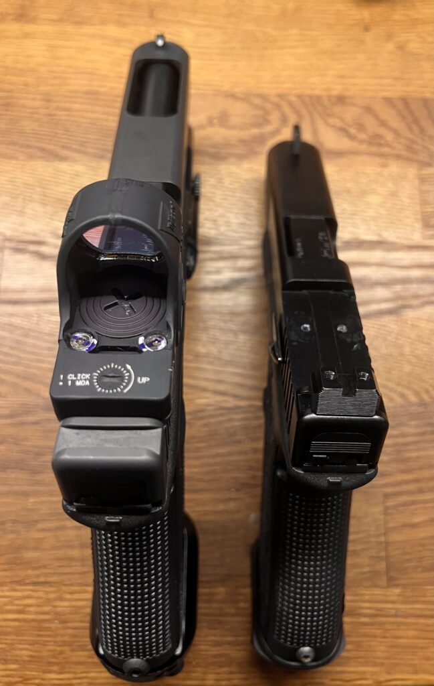
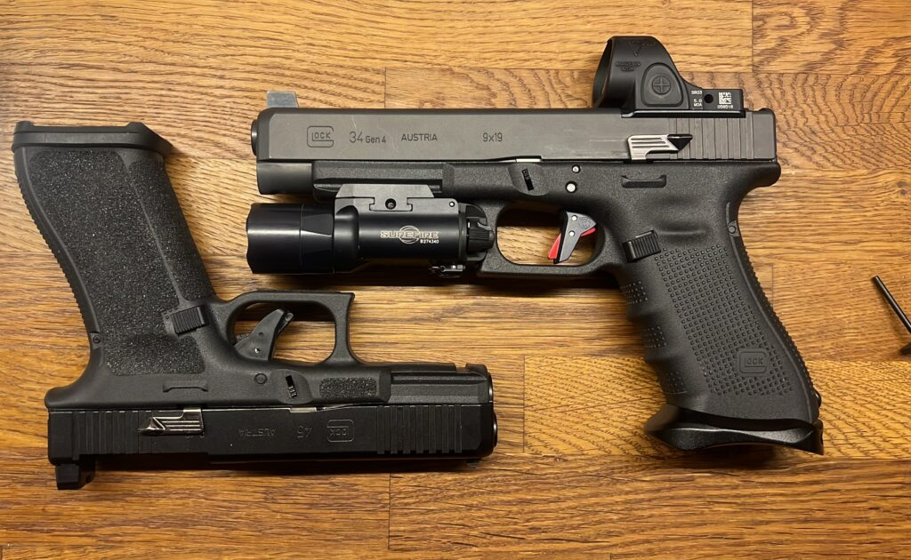
Warto jednak zaznaczyć, że Glock jest bronią wymagającą – jego specyficzny, dość sztywny spust nie wybacza błędów i wymaga regularnego treningu pracy na spuście, by wypracować precyzyjną technikę. Dzięki wersjom MOS (Modular Optic System) możesz szybko i wygodnie zamontować kolimator, co poprawia komfort, skuteczność celowania i pozwala się rozwijać. Aktualna promocja „Glock do Brasil” to świetna okazja dla osób poszukujących nowego, fabrycznego Glocka w wyjątkowo przystępnej cenie. Ta limitowana seria pistoletów, która pierwotnie miała trafić na rynek brazylijski, znalazła się w polskiej dystrybucji z powodu zmiany przepisów w Brazylii, co pozwoliło na masową wyprzedaż niewykorzystanych sztuk. W Polsce cena takich Glocków 17 Gen 3 zaczyna się już od około 2000 zł, co stanowi nawet do 40% oszczędności w porównaniu do standardowych modeli dostępnych na rynku.
CZ Shadow 2 – jeśli nie wygrywasz zawodów, to pewnie jeszcze jej nie kupiłeś
CZ to marka oferująca szeroki wachlarz pistoletów. Na czoło wysuwa mi się model Shadow 2, który zyskuje uznanie za ergonomię, łagodny, przewidywalny spust i masę umożliwiającą kontrolę odrzutu, co pozwala początkującym na płynniejsze opanowanie techniki strzelania. Nie mniej popularne są nowsze serie P-10, bardziej minimalistyczne, ale bardzo solidne i konkurencyjne wobec Glocka. Warto zwrócić uwagę, że choć pojawiają się sporadyczne problemy z magazynkami czy zacinaniem się broni w początkowym okresie, to większość wad ustępuje po właściwym okresie docierania i użytkowania. Tak na marginesie dodam, że udało mi się kiedyś z marszu wejść na zawody i być na pudle z klubowej szadołki 2 na ponad 100 osób 🙂 ten pistolet strzela celnie sam.
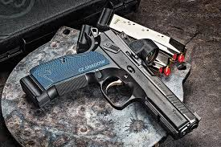
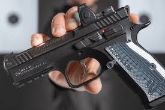
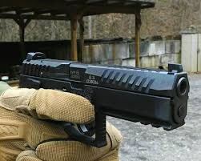
Carl Walther (Carl Walther GmbH)
Seria PDP F-Series Pro i Pro E oferuje lekki, płaski spust i fabrycznie dostępny aluminiowy magwell, co ułatwia szybkie ładowania. Szeroki wybór konfigurowalnych chwytów, w tym dedykowanych dla kobiet, zwiększa uniwersalność tych modeli, które mają także fabryczne wersje Optics Ready. Bardzo dużo osób chwali sobie PDP i poleca.
Coraz częściej powtarza się, że „PDP kupują ci, którzy są zmęczeni tłumaczeniem, dlaczego nie wygrali na Shadowce” albo żartobliwie mówi się: „Sprawdź, czy Twój PDP nie ma trybu auto, bo na zawodach potrafi wyprzedzić wszystkie CZ”.
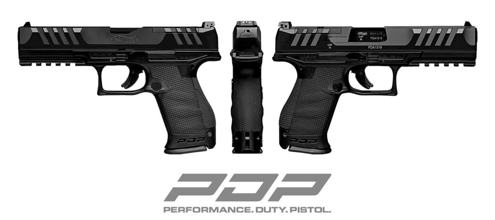
W rozmowach strzelców podkreśla się pozytywną ironię: „Walther – pistolet dla tych, którzy lubią nowoczesność i nie muszą już nikomu w kółko tłumaczyć, że legendarny Shadow to nie jedyna droga do dobrego wyniku”. Sam producent nie stroni od podkreślania sportowych (i półsportowych) zastosowań, oferując szerokie możliwości konfiguracji. Walther PDP przebił się jako broń, która łączy nowoczesną ergonomię, doskonały spust i gotowość pod montaż optyki.
Fabbrica d’Armi Pietro Beretta
Beretta 92FS czy M9 to klasyczna konstrukcja o sprawdzonej niezawodności, jednak bez standardowej szyny montażowej, przez co ma ograniczone możliwości modernizacji. Nowocześniejsza Beretta APX zdobywa popularność dzięki swemu nowoczesnemu wyglądowi i opcji montażu kolimatora, idealnie wpisując się w potrzeby użytkowników chcących łączyć tradycję z nowoczesnością.
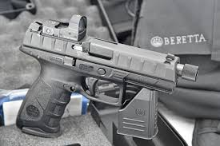
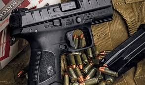
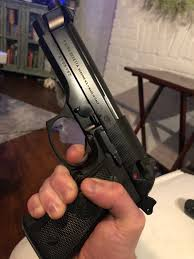
Turecka ekspansja i Canik
Silną obecność rynku zaznacza Canik, oferujący modele TP9SF, MC9 i Mete, które wyróżniają się dobrym stosunkiem jakości do ceny, wsparciem fabrycznych szyn montażowych i solidną funkcjonalnością, choć sporadyczne problemy produkcyjne nadal pojawiają się w początkowych egzemplarzach. Do mnie nie przemawiają, znam ludzi którzy strzelają z nich długo i wciąż nie mogą się z nimi dogadać.
Heckler & Koch jako producent premium dostarcza wysoko ergonomiczne i trwałe pistolety w postaci USP, VP9 czy P30. Choć jakość wykonania stoi tu na najwyższym poziomie, to sporadyczne przypadki problemów serwisowych, w tym z magazynkami, były odnotowane.
Z jednej strony USP czy VP9 ceni się za połączenie świetnej ergonomii, miękkiej pracy spustu i bardzo wysokiej odporności na przebiegi rzędu dziesiątek tysięcy strzałów bez poważniejszych awarii. Z drugiej — na forach regularnie powraca temat wysokich ceny części zamiennych i „kultowych” akcesoriów, których dostępność czasem bywa utrudniona, a oryginalne magazynki do HK bywają przedmiotem osobnych mini-dyskusji: „kupiłem HK, teraz tylko zbieram na drugi magazynek”.
Warto jednak podkreślić, że wybierając HK, wybierasz sprzęt z najwyższej półki – zarówno pod względem wykonania, jak i długowieczności. To pistolety, które spokojnie przechodzą przez testy policyjne i wojskowe i słyną z tego, że nawet mocno zmęczone egzemplarze wciąż działają „jak w zegarku”. Nic dziwnego, że w internetowych dyskusjach HK pojawia się często jako „pistolet ostatniej szansy” i opcja dla tych, którzy chcą mieć po prostu święty spokój i nie szukać już więcej.
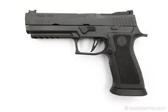
Kolejny jest SIG Sauer oferuje modele P320, P365 czy Legion, które dzięki nowoczesnym technologiom i modułowej budowie zdobywają szerokie uznanie. Nie można jednak pominąć afery związanej z niezamierzonymi wystrzałami P320, która w 2025 roku doprowadziła do tragicznego wypadku śmiertelnego na amerykańskiej jednostce wojskowej w Wyoming. Dochodzenia wykazały defekty mechanizmu spustowego i problemy z bezpieczeństwem, co spowodowało tymczasowe zawieszenie użycia broni i liczne dyskusje w środowisku. Firma wdrożyła program napraw i usprawnień, ale temat pozostaje gorący i ważny dla potencjalnych użytkowników. Więcej napiszę w osobnej wzmiance na ten temat. Wrzucę tu link jak będzie gotowa. Trzeba się dobrze zastanowić, czy w tej chwili warto kupować SIGa.
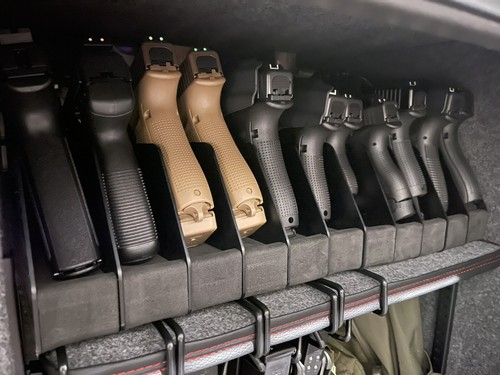
Ostatnim dziś omawianym pistoletem, który jest doskonałym wyborem z zastosowaniem nowoczesnych materiałów jest Smith & Wesson M&P9 M2.0 Metal – model z aluminiową ramą, który zapewnia lepszą stabilność i kontrolę odrzutu. Użytkownicy cenią jego ergonomię, łatwość dopasowania chwytu, wygodny spust i wysoką precyzję. Pomimo nieznacznych sporadycznych niedociągnięć produkcyjnych, broń ta jest uważana za solidny i wszechstronny wybór w segmencie pistolety metalowe. Ma tez jedną wadę jest dosyć drogi.
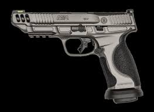
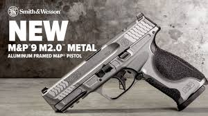
Warto zauważyć, że wszystkie omawiane pistolety oferują wersje MOS lub Optics Ready, czyli fabrycznie przygotowane do montażu optycznych celowników, co znacznie ułatwia i przyspiesza celowanie.
Ergonomia i charakterystyka spustu to kluczowe kwestie. Glock wymaga troszkę więcej pracy, Shadow 2 ułatwia start dzięki łagodnemu spustowi i większej masie, a Walther, HK i SIG łączą komfort z precyzją, często oferując regulacje chwytu oraz spustu.
Zakup pierwszego pistoletu wiąże się też z decyzją o zakupie nowego lub używanego egzemplarza. Używane modele są tańsze, ale wymagają dokładnego sprawdzenia stanu. Warto zaopatrzyć się w broń u sprawdzonego sprzedawcy oferującego gwarancję. Pistolet tak naprawdę jest bardzo ciężko zajechać i na pewno będzie to na zewnątrz widać.
Nie można zapomnieć także o rewolwerach, jak Taurus 838 czy Smith & Wesson, które są alternatywą dla pistoletów, oferując prostotę konstrukcji i wysoką niezawodność. Oczywiście, ich ograniczenia są znane: mniejsza pojemność bębenka, wolniejsza wymiana amunicji i nieco mniej rozbudowany rynek akcesoriów. Ale w zamian zyskujesz coś, czego nie zapewni żaden nowoczesny pistolet — absolutną pewność działania i niepowtarzalny styl oraz frajdę z każdego strzału. W dodatku dobre egzemplarze, potrafią przetrwać dekady, będąc niezawodnym.
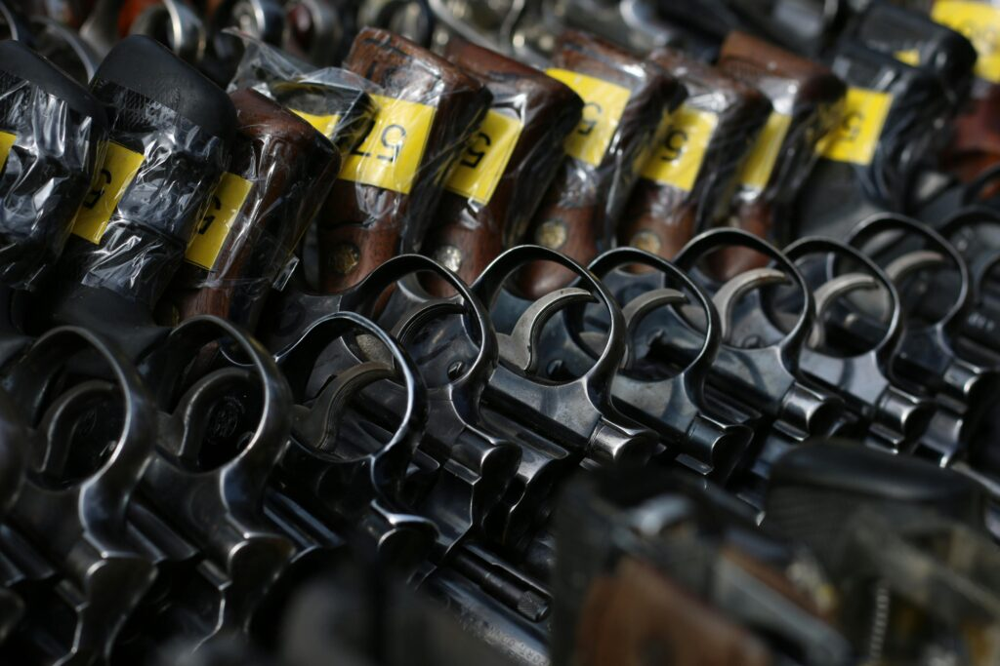
Podsumowując, najlepszy pierwszy pistolet to taki, który dopasuje się do Twojej ręki i poziomu doświadczenia, mieści się w rozsądnym budżecie i posiada solidne wsparcie serwisowe i rynku akcesoriów. Warto zawsze rozmówić się z posiadaczami interesującego nas modelu i przetestować broń na strzelnicy przed zakupem. Dzięki temu zaczniesz bezpiecznie, komfortowo i z satysfakcją swoją przygodę z bronią krótką.
to chyba tyle…
KuDłacz